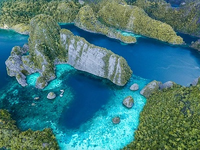

Pulau Raja Ampat terletak di provinsi Papua Barat, Indonesia. Terkenal dengan pantainya yang menakjubkan, terumbu karang, dan biota lautnya yang beragam. Pulau ini adalah rumah bagi banyak desa tradisional Papua, dan pengunjung dapat belajar tentang budaya dan cara hidup setempat.
Pulau Raja Ampat juga merupakan tujuan populer untuk menyelam dan snorkeling, dengan banyak lokasi menyelam dan terumbu karang untuk dijelajahi. Perairan pulau yang sebening kristal menawarkan jarak pandang hingga 30 meter, dan beragam biota laut termasuk hiu, pari, penyu, dan ikan berwarna-warni.
Selain keindahan alamnya, Pulau Raja Ampat juga terkenal dengan keunikan satwa liarnya, antara lain cendrawasih endemik Raja Ampat dan monotreme Papua Barat yang terancam punah. Hutan pulau ini juga menjadi rumah bagi berbagai jenis burung lainnya, termasuk burung beo, kakatua, dan burung pekakak.
Pariwisata menjadi semakin populer di Pulau Raja Ampat, dengan banyak resor dan operator tur yang menawarkan paket yang mencakup menyelam, snorkeling, dan menjelajahi pulau. Namun, infrastruktur pulau ini masih berkembang, dan pengunjung harus bersiap untuk akomodasi dasar dan fasilitas yang terbatas.
Secara keseluruhan, Pulau Raja Ampat adalah permata tersembunyi bagi mereka yang mencari pengalaman pulau tropis yang unik dan tak terlupakan. Keindahan alamnya yang menakjubkan, warisan budaya yang kaya, dan satwa liar yang beragam menjadikannya destinasi yang wajib dikunjungi bagi para pencari petualangan dan pecinta alam.
Berikut beberapa atraksi dan aktivitas menarik yang dapat dilakukan di Pulau Raja Ampat:
Menyelam dan snorkeling: Pulau Raja Ampat terkenal dengan peluang menyelam dan snorkelingnya yang luar biasa. Perairan pulau yang sebening kristal menawarkan jarak pandang hingga 30 meter, dan beragam biota laut termasuk hiu, pari, penyu, dan ikan berwarna-warni.
Island hopping: Pulau Raja Ampat dikelilingi oleh banyak pulau-pulau kecil, masing-masing memiliki karakter dan daya tarik tersendiri. Pengunjung dapat mengikuti tur perahu untuk menjelajahi pulau-pulau ini dan menemukan pantai, teluk kecil, dan laguna yang tersembunyi.
